3．封闭解；傅里叶积分
尽管有偏微分方程的傅里叶级数解法的成功与冲击，19世纪主要努力之一仍然是要寻求封闭形式的解，即用初等函数及其积分表示的解。这样的解，至少是18世纪和19世纪初已知的类型的解，在计算中是更易于掌握的、更明白的，并且是更易于使用的。
用封闭形式解偏微分方程的最重要的方法是傅里叶积分，它起源于拉普拉斯开创的工作。这思想应当归源于傅里叶、柯西、泊松。把这个重要发现的优先权归给谁是不可能的，因为这三个人都向科学院宣读了直到一个时期以后才发表出来的论文，但每人都听过别人的论文，无法从出版物中确定什么东西是每个人取自口头报告的。
傅里叶在1811年得奖论文的最后一节里，讨论了在一个方向延伸到无穷远的区域内热的传导问题。为了得到这类问题的解答，他从有界区域的热方程的解的普遍形式出发，即（参看［10］）
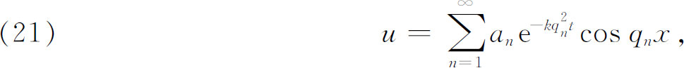
其中qn由边界条件确定，an由初始条件确定。这时傅里叶把qn看作曲线的横坐标，把an看作曲线的纵坐标。于是an＝Q（qn），其中Q是q的某一函数。然后他把（21）换成
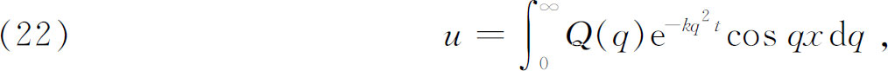
并设法确定Q。他回到关于系数的公式
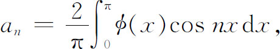
其中ø（x）通常就是初始函数。利用把an换成Q，把n换成q的“极限过程”，他得到
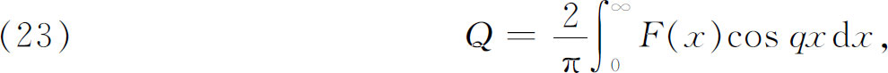
其中F（x）是偶函数，是在该无穷区域上给定的初始温度。然后把（23）用于（22），并交换积分次序（傅里叶对此种交换不怀疑有什么问题），他便有
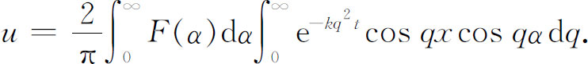
傅里叶然后对奇函数F（x）做了类似的事，从而最后得到
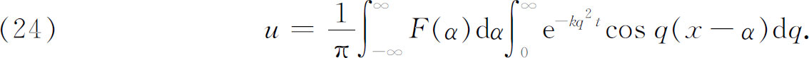
这样，解便被表示为封闭的形式了。今对t＝0，u就是F（x），它可以是任何给定的函数，所以傅里叶断言，对任意的函数F（x），有
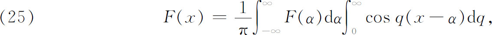
这便是任意函数的傅里叶重积分表示的一种形式。傅里叶在他的书里指出，如何用这个积分解许多类型的微分方程。一个用法是根据这样的事实，即如果用任何方法得到了（24），则（25）就表示u满足t＝0时的初始条件。另一个用法更为明白，如果我们用欧拉关系式eix＝cos x＋isin x把傅里叶积分写成指数形式，则（25）变成
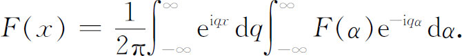
这个形式表明，F（x）可以分解为无穷多个具有连续变动频率q/2π和振幅为
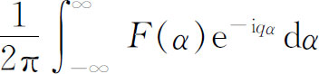
的调和分量，而通常的傅里叶级数则是把给定函数分解成无穷多个但为离散的调和分量的集合。柯西关于傅里叶积分的导出有点相似，载有此事的论文《波的传播理论》（Théorie de la propagation des ondes）获得了巴黎科学院1816年的奖金(5)。此文是对流体表面上波动的第一次大规模的研究，这是由拉普拉斯在1778年开辟的课题。虽然柯西建立了一般的流体动力学方程，但他差不多限于研究特殊情形。特别是他考虑方程
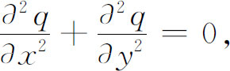
其中q就是后来称为速度势的，而x与y是空间坐标。他未加说明就写出了解（参看［22］）
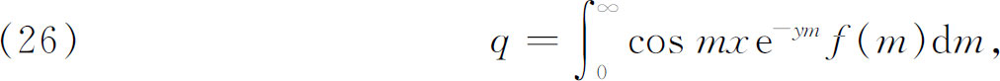
其中f（m）至此还是任意的。因为在曲面上y＝0，q化为已给函数F（x），
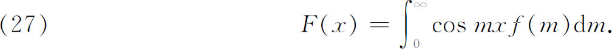
然后柯西证明
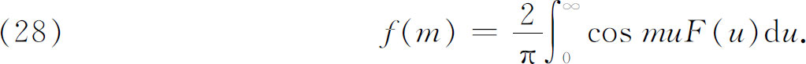
有了f（m）的这个值后就有
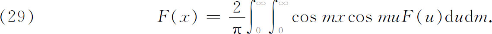
这样柯西不但得到了F（x）的傅里叶二重积分表示，而且又有了f（m）到F（x）的傅里叶变换及其逆变换。给定了F（x），f（m）就由（28）确定，并能用于（26）。
柯西钻研他的得奖论文后不久，泊松就发表了关于水波的主要著作《关于波的理论的报告》（Mémoire sur la théorie des ondes）(6)。泊松不能争奖，因为他是科学院的成员。在这著作中他用与柯西大致相同的方式导出了傅里叶积分。